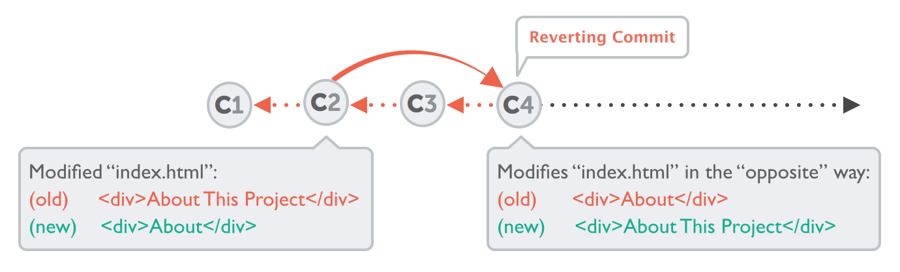

Configuration
Identity
$ git config --global user.name "John Doe"
$ git config --global user.email johndoe@example.com
Editor
$ git config --global core.editor vim
Colors
$ git config --global color.ui true
create a new repository
create a new directory, open it and perform a
git init
to create a new git repository.
checkout a repository
create a working copy of a local repository by running the command
git clone /path/to/repository
when using a remote server, your command will be
git clone username@host:/path/to/repository
workflow
your local repository consists of three "trees" maintained by git.
the first one is your Working Directory which holds the actual files.
the second one is the Index which acts as a staging area and
finally the HEAD which points to the last commit you've made.

add & commit
You can propose changes (add it to the Index) usinggit add <filename>git add *This is the first step in the basic git workflow. To actually commit these changes use
git commit -m "Commit message"Now the file is committed to the HEAD, but not in your remote repository yet.
pushing changes
Your changes are now in the HEAD of your local working copy. To send those changes to your remote repository, execute
git push origin master
Change master to whatever branch you want to push your changes to.
If you have not cloned an existing repository and want to connect your repository to a remote server, you need to add it with
git remote add origin <server>
Now you are able to push your changes to the selected remote server
That's it....
Awesoommeee...!!
Awesoommeee...!!
Show Status
git status
branching
Branches are used to develop features isolated from each other. The master branch is the "default" branch when you create a repository. Use other branches for development and merge them back to the master branch upon completion.

create a new branch named "feature_x" and switch to it using
git checkout -b feature_x
switch back to master
git checkout master
and delete the branch again
git branch -d feature_x
a branch is not available to others unless you push the branch to your remote repository
git push origin <branch>
update & merge
to update your local repository to the newest commit, execute
git pull
in your working directory to fetch and merge remote changes.
to merge another branch into your active branch (e.g. master), use
git merge <branch>
in both cases git tries to auto-merge changes.
Unfortunately, this is not always possible and results in conflicts.
You are responsible to merge those conflicts
manually by editing the files shown by git. After changing, you need to mark them as merged with
git add <filename>
before merging changes, you can also preview them by using
git diff <source_branch> <target_branch>
replace local changes
In case you did something wrong, which for sure never happens ;), you can replace local changes using the command
git checkout -- <filename>
this replaces the changes in your working tree with the last content in HEAD. Changes already added to the index, as well as new files, will be kept.
If you instead want to drop all your local changes and commits, fetch the latest history from the server and point your local master branch at it like this
git fetch origin
git reset --hard origin/master
Git Diff
git diff command can be used to show you the difference between the version of a file in the working directory, index and most recent commit
git diff –cached
Show differences between the index and the most recent commit.
git diff HEAD
Show the differences between your working directory and the most recent commit.
log
In its simplest form, you can study repository history using..
git log
You can add a lot of parameters to make the log look like what you want.
See only which files have changed:
git log --name-status
These are just a few of the possible parameters you can use. For more, see
git log --help
Undoing Git
One of the greatest aspects about Git is that you can undo almost anything. In the end, this means that you actually can't mess up: Git always provides a safety net for you.
Fixing the Last Commit
git commit --amend -m "correct message"In case you want to add some more changes to that last commit, you can simply stage them as normal and then commit again.
git add some/changed/file.ext
git commit --amend -m "commit message"
Undoing Local Changes
Changes are called "local" when they haven't been committed, yet: all the modifications that are currently present in your working directory are "local", uncommitted changes.
To restore a file to its last committed version, you use the "git checkout" command:
git checkout -- file/to/restore.extTo discard all current changes in your working copy and to restore the last committed version of your complete project
$ git reset --hard HEAD
Undoing Committed Changes
git revert 2b504be
git reset --hard 2be18d9
Github Pages
Are you learning to code and need an easy, free way to host your projects? GitHub pages is your answer. Not only is it an easy hosting solution for websites with HTML, CSS, and JavaScript files, but it also gives you practice using Git, an important but tricky tool.
Step by Step Guide:https://goo.gl/UIpYPG